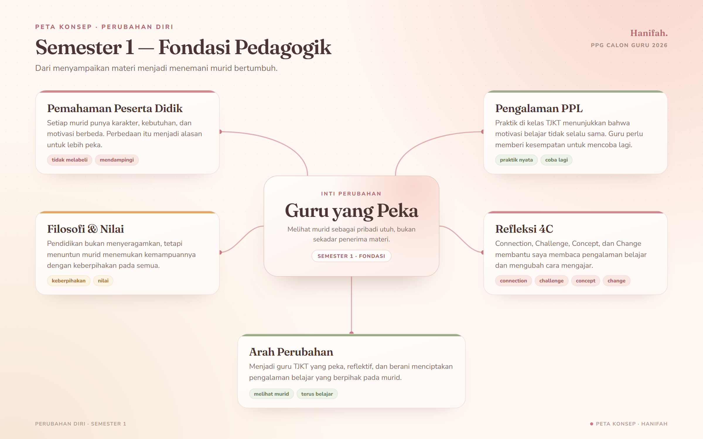
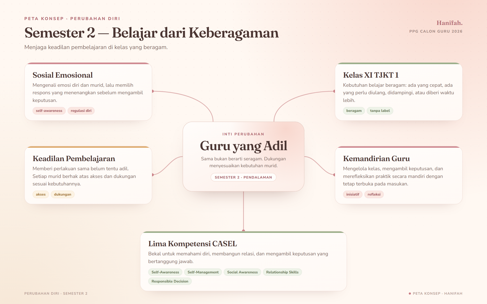
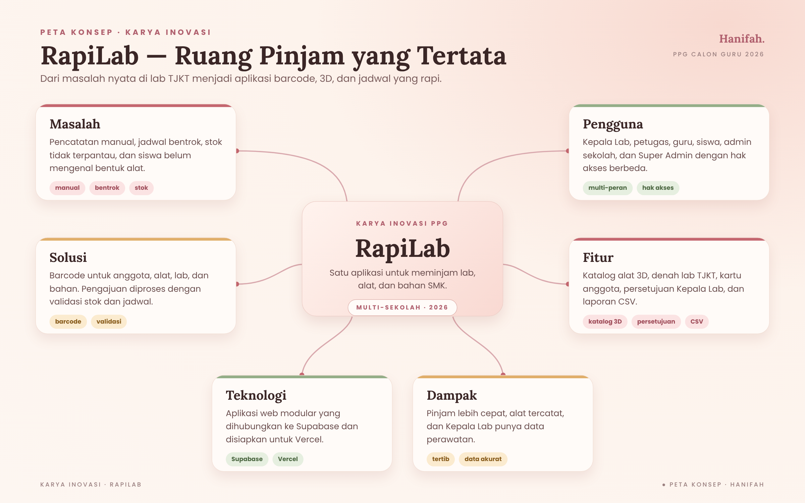

Halo, saya Andi Hanifah Putri Rani — calon guru TJKT yang percaya bahwa kelas yang hangat dapat melahirkan karya yang bermakna. Ini ruang kecil untuk menyimpan cerita belajar, refleksi, dan karya inovasi saya.
Calon guru TJKT yang percaya bahwa teknologi terbaik adalah teknologi yang membuat murid merasa mampu.
Foto Profilassets/foto-profil.png
Andi Hanifah Putri Rani,S.KomGuru TJKT · PPG Calon Guru Aktif belajar
Data Diri
Nama
Andi Hanifah Putri Rani, S.Kom.
NIM
2590494950035
Bidang Studi
Teknik Jaringan Komputer dan Telekomunikasi (TJKT)
Universitas
Universitas Negeri Makassar
Angkatan
2026
Sekolah Mitra
SMK Negeri 10 Makassar
Dosen Pembimbing
Dr. Fatahillah, S.Pd., M.Eng.
Guru Pamong
Muh Takbir, S.Pd., MM.
Jaringan Komputer Telekomunikasi Cisco & Mikrotik Web Dasar Kelas Interaktif
Cerita Singkat
Saya Andi Hanifah Putri Rani, akrab disapa Hanifah atau Rani. Rasa ingin tahu yang tinggi membuat saya selalu antusias mempelajari hal baru — dari membaca, mendaki, sampai membongkar cara kerja sebuah jaringan. Semangat itu semakin berkobar ketika saya melangkah sebagai mahasiswa PPG Calon Guru.
Pengalaman mengabdi di SMK menjadi titik balik yang berharga. Setiap kelas mengingatkan saya pada sosok guru seperti apa yang saya rindukan di masa lalu, sekaligus menyadarkan bahwa masih banyak hal yang harus saya benahi untuk menjadi pendidik yang lebih baik.
Jadilah berbeda untuk dikenang, karena berbeda itu indah.
Arah Mengajar
Saya ingin menghadirkan kelas TJKT yang tidak berhenti pada hafalan perangkat. Murid perlu merakit, mencoba, gagal, lalu memperbaiki — sebagaimana cara kerja jaringan yang sesungguhnya.
Kontekstual — menghubungkan materi dengan dunia industri dan kebutuhan DUDI.
Berpusat pada murid — asesmen awal dan pembelajaran berdiferensiasi.
Bermakna — proyek nyata, kolaborasi, dan refleksi.
Inklusif — setiap murid mendapat kesempatan yang setara.
IDENTIFIKASI DIRI
Visi & Strategi
Visi Pendidikan Indonesia
Pemerataan akses pendidikan yang bermutu, termasuk literasi digital, agar setiap anak — di kota maupun daerah terpencil — memiliki kesempatan yang setara untuk tumbuh.
Visi Menjadi Guru
Pendidik yang membangkitkan semangat belajar, menumbuhkan keberanian mencoba, menciptakan kelas yang adil dan setara, serta membangun kedekatan emosional dengan murid.
Fokus Strategi
Asesmen diagnostik & diferensiasi.
Modul ajar interaktif dan platform digital.
PjBL, teaching factory, dan proyek jaringan.
Budaya kerja industri dan K3.
Up-skilling guru lewat magang & sertifikasi.
02 / LEARNING JOURNEY
Perjalanan Belajar
Dari memahami, mencoba, gagal, merefleksikan, hingga bertumbuh menjadi guru yang berpihak pada murid.
Perjalanan saya sebagai mahasiswa PPG Calon Guru adalah proses yang membawa saya untuk terus belajar, memahami, mencoba, merefleksikan, dan berkembang. Setiap pengalaman memberi pemahaman baru tentang pendidikan dan perlahan membentuk cara pandang saya sebagai calon guru TJKT.
Perubahan dalam Diri Saya
01
Memahami
Memahami hakikat pendidikan dan nilai yang harus dibangun.
02
Mengenal
Memahami karakteristik, kebutuhan, dan potensi peserta didik.
03
Memetakan Masalah
Melihat kebutuhan dan menemukan solusi melalui Design Thinking.
04
Merancang
Menciptakan pembelajaran yang mendalam, bermakna, dan sesuai kebutuhan murid.
05
Menerapkan
Membawa pengetahuan dan rancangan ke praktik melalui PPL.
06
Bertumbuh
Belajar dari tantangan, kesalahan, pengalaman, dan umpan balik.
07
Menjadi
Guru yang reflektif, empatik, adaptif, kreatif, dan berpusat pada murid.
Setiap pengalaman saling berkaitan. Filosofi Pendidikan membantu saya memahami mengapa pendidikan penting. Pemahaman Peserta Didik mengajarkan siapa yang saya ajar. Design Thinking mengajarkan bagaimana memahami kebutuhan sebelum menciptakan solusi. Pembelajaran Mendalam dan Asesmen membantu merancang pengalaman belajar yang bermakna. PPL memberi ruang menerapkannya, sedangkan Pola Pikir Bertumbuh mengajarkan saya untuk terus belajar dari setiap proses.
Sebagai calon guru TJKT, saya ingin menghadirkan pembelajaran yang tidak hanya mengembangkan keterampilan teknis, tetapi juga kreativitas, tanggung jawab, kerja sama, kedisiplinan, dan kepercayaan diri. Perjalanan saya belum selesai.
03 / SEMESTER 1
Pengalaman Semester 1
Meletakkan fondasi pedagogik: memahami murid sebelum merancang pembelajaran.

Peta Konsep Semester 1assets/galeri/peta-konsep-s1.png Klik untuk memperbesar
Transformasi dan Perkembangan Diri
Semester pertama menjadi perjalanan yang banyak mengubah cara pandang saya sebagai calon guru. Dari berbagai mata kuliah dan pengalaman PPL, Pemahaman Peserta Didik menjadi salah satu yang paling berkesan karena mengajarkan saya melihat murid dari sudut pandang yang berbeda. Setiap murid memiliki karakter, kebutuhan, kemampuan, dan kondisi yang berbeda. Perbedaan itu bukan alasan untuk membedakan perhatian, justru menjadi alasan bagi guru untuk lebih peka.
Jika kamu berhenti di kegagalanmu yang kedua, maka kamu tidak akan tahu bahwa kamu berhasil di percobaanmu yang ketiga.
Pengalaman PPL semakin menguatkan pemahaman tersebut. Saya melihat bahwa tidak semua murid memiliki motivasi dan kesiapan belajar yang sama. Ada yang aktif dan cepat memahami materi, tetapi ada pula yang diam, kurang percaya diri, takut mencoba, atau kehilangan semangat. Dari sini saya belajar bahwa tugas guru bukan hanya menyampaikan materi, tetapi juga menumbuhkan dan mengembalikan motivasi belajar murid.
Dalam konteks TJKT, saya menemukan murid yang cepat memahami konfigurasi, tetapi ada juga yang butuh pendampingan berulang saat merakit kabel atau mengisi alamat IP. Saya ingin menjadi guru yang tidak mudah memberi label, tetapi terus memberi kesempatan untuk mencoba, berkembang, dan menemukan kemampuannya. Pembelajaran yang baik bukan hanya ketika materi tersampaikan, tetapi ketika murid merasa dilihat, dihargai, diperhatikan, dan memiliki kesempatan untuk berkembang.
Video 1 — Praktik Mengajar
Video belum ditambahkanIsi atribut data-youtube="ID_VIDEO" di index.html
Video 2 — Refleksi Belajar
Video belum ditambahkanIsi atribut data-youtube="ID_VIDEO" di index.html
04 / SEMESTER 2
Pengalaman Semester 2
Pendalaman sosial-emosional dan kemandirian mengajar di kelas yang beragam.

Peta Konsep Semester 2assets/galeri/peta-konsep-s2.png Klik untuk memperbesar
Belajar dari Keberagaman Kelas
Pada semester 2, mata kuliah yang paling relevan dengan pengalaman PPL Mandiri adalah Pembelajaran Sosial Emosional (PSE). Relevansi itu saya rasakan ketika mengajar di kelas XI TJKT 1 yang di dalamnya terdapat murid dengan kebutuhan belajar beragam. Ada murid yang cepat mengikuti instruksi, ada pula yang membutuhkan penjelasan berulang, pendampingan, atau waktu lebih panjang.
Pengalaman tersebut mengubah cara pandang saya: memberikan perlakuan yang sama belum tentu berarti memberikan pembelajaran dengan cara yang sama. Keadilan dalam pembelajaran adalah ketika setiap murid memperoleh kesempatan dan dukungan sesuai kebutuhannya.
Menjadi guru bukan hanya tentang memahami apa yang harus diajarkan, tetapi juga memahami siapa yang sedang kita ajar.
Pengalaman di kelas membuat saya memahami lima kompetensi CASEL: self-awareness, self-management, social awareness, relationship skills, dan responsible decision-making. Saya belajar mengenali emosi diri ketika pembelajaran tidak berjalan sesuai rencana, menahan keinginan menilai terlalu cepat, dan memahami apa yang sebenarnya dibutuhkan murid.
Dari konsep EMC2, terutama empati dan compassion, saya belajar bahwa hal sederhana seperti mendengarkan dengan sabar, memberi kesempatan mencoba kembali, menggunakan bahasa yang lebih lembut, atau mengapresiasi usaha murid dapat memberi makna besar. Sebelum mengajarkan murid mengelola emosi, saya harus menunjukkan contohnya lebih dulu.
Melalui pendekatan experiential learning, PPL Mandiri menjadi ruang belajar yang berharga: saya mengalami, merefleksikan, lalu memperbaiki cara menghadapi situasi berikutnya. Menjadi guru profesional bukan berarti selalu tahu semua jawaban, tetapi memiliki kemauan untuk terus belajar dari pengalaman.
05 / KARYA INOVASI
Karya Inovasi
Sebuah media pembelajaran yang lahir dari kebutuhan nyata di kelas TJKT.
Karya Inovasi PPG · 2026
RapiLab — Ruang Pinjam Lab yang Lebih Rapi
Aplikasi web multi-sekolah untuk meminjam alat, bahan, dan ruang lab SMK. Kartu anggota, alat, dan lab punya barcode sendiri; siswa dapat melihat katalog alat dalam bentuk 3D lalu mengajukan peminjaman tanpa harus antre di meja petugas.
Peta ini merangkum hubungan antara masalah nyata di lab TJKT, pengguna, solusi, fitur, teknologi, dan dampak yang ingin dihadirkan.

Peta Konsep RapiLabassets/galeri/peta-konsep-rapilab.png Klik untuk memperbesar
Video Tutorial RapiLab
Direkam langsung dari aplikasi RapiLab: siswa meminjam alat, Kepala Lab menyetujui, siswa mengembalikan alat dengan foto kamera langsung, lalu Admin dan Kepala Lab memeriksa fotonya.
Latar Belakang & Tujuan
Peminjaman alat dan ruang lab di SMK sering masih dicatat manual. Akibatnya sekolah sulit mengetahui siapa pemakai terakhir, bagaimana kondisi alat saat dikembalikan, dan apakah jadwal lab bentrok. Di lab TJKT, keterbatasan jumlah PC, router, switch, dan alat praktik membuat antrean peminjaman semakin terasa.
Siswa juga sering belum hafal nama dan bentuk alat sehingga harus bertanya berulang kali kepada petugas. Di sisi lain, Kepala Lab membutuhkan data stok dan riwayat pemakaian untuk merencanakan perawatan serta pengadaan.
RapiLab lahir sebagai karya inovasi PPG: satu aplikasi web untuk scan kartu, mengajukan pinjam, menyetujui, memantau stok, dan melihat lab dalam bentuk 3D. Karya ini dikembangkan bertahap dari satu file HTML, lalu tumbuh menjadi aplikasi modular yang siap dihubungkan ke Supabase dan Vercel.
Tujuan Pengembangan
Mencatat pemakai terakhir dan riwayat peminjaman secara digital.
Mempercepat proses pinjam melalui barcode dan pilihan alat bergambar 3D.
Mencegah bentrok jadwal lab dengan validasi waktu di database.
Mengontrol stok bahan serta kondisi alat yang dipinjam.
Menyediakan katalog dan denah 3D lab TJKT yang mudah dipahami siswa.
Menjaga data setiap sekolah tetap terpisah melalui sistem multi-sekolah.
Keterkaitan dengan Mata Kuliah
Pemahaman Peserta Didik
Antarmuka dibuat sederhana dan katalog alat memakai gambar 3D agar siswa yang belum hafal nama alat tetap dapat memilih dengan percaya diri.
PMA & PPL
Riwayat peminjaman dan status stok menjadi data untuk mengevaluasi kebutuhan lab, kondisi alat, serta keterlibatan siswa dalam praktik.
Fitur Utama
Lima Hal yang Membuat RapiLab Berbeda
01
Barcode untuk Semua
Kartu anggota, alat, lab, dan bahan memiliki kode sendiri. Peminjaman bisa lewat kamera, foto, scanner USB, atau pilih manual dari daftar.
02
Alur Pinjam yang Jelas
Scan atau pilih item, ajukan keperluan, lalu tunggu persetujuan Kepala Lab. Pengembalian alat wajib disertai foto dan pemeriksaan kondisi.
03
3D Lab TJKT
Lab komputer dan jaringan digambarkan otomatis dari kapasitasnya: meja PC, rak server, lemari alat, papan tulis, dan proyektor. Warna layar menunjukkan status alat.
04
Katalog 3D Alat
Lebih dari 70 bentuk alat dikenali dari namanya, tahan salah ketik dan sinonim, serta bisa diputar. Foto asli tetap opsional.
05
Multi-Sekolah & Aman
Satu aplikasi untuk banyak sekolah, dengan data terpisah per sekolah, hak akses yang dicek di database, stok bahan, dan laporan CSV.
Kesimpulan
RapiLab adalah aplikasi peminjaman lab, alat, dan bahan SMK yang lahir dari kebutuhan nyata di sekolah. Karya ini menggabungkan barcode, katalog 3D, jadwal lab, stok bahan, dan persetujuan berjenjang dalam satu alur yang mudah digunakan siswa maupun petugas.
Pada versi terakhir, aplikasi diuji melalui 211 pengujian browser, 59 pengujian database, dan 53 pengujian server akun. Bagian Supabase dan Vercel masih diuji dengan lingkungan tiruan, sedangkan model 3D dibuat bergaya sederhana, bukan fotorealistis. Masukan dari guru dan siswa tetap dibutuhkan sebelum digunakan secara luas.
BUKTI PRESENTASI
Bukti Sudah Presentasikan Aplikasi
Dokumentasi saat RapiLab dipresentasikan kepada guru, siswa, atau rekan sejawat. Tiga foto utama tampil otomatis dari folder assets; foto yang diunggah akan muncul di bawahnya.
Dari scan kartu anggota hingga pengembalian alat dan pembaruan stok — semuanya tercatat dalam satu alur.
Mulai / Selesai Proses Keputusan Revisi
06 / REFLEKSI SEMESTER 1
Refleksi Semester 1
Model 4C — Connection, Challenge, Concept, Change — pada setiap mata kuliah.
Filosofi Pendidikan & Pendidikan Nilai
Landasan filosofis pendidikan serta penanaman nilai dalam praktik mengajar TJKT.
Pemahaman Peserta Didik
Karakteristik, kebutuhan, dan potensi murid untuk pembelajaran yang berpihak pada mereka.
Pembelajaran Mendalam & Asesmen Dasar
Asesmen awal dan pembelajaran bermakna untuk mendorong pemahaman murid.
Design Thinking
Memecahkan masalah pembelajaran secara kreatif dan berpusat pada murid.
Pola Pikir Bertumbuh
Mengembangkan growth mindset dalam konteks pendidikan dan pembelajaran.
PPL Terbimbing
Praktik mengajar terbimbing di sekolah bersama guru pamong dan dosen pembimbing.
07 / REFLEKSI SEMESTER 2
Refleksi Semester 2
Pendalaman kompetensi sosial-emosional, asesmen, kepemimpinan, dan kemandirian.
Pembelajaran Sosial & Emosional
Menciptakan lingkungan belajar yang aman, nyaman, dan berpihak pada murid.
Pembelajaran Mendalam & Asesmen Lanjut
Asesmen berkelanjutan dan umpan balik yang membangun bagi murid.
Proyek Kepemimpinan
Merancang proyek berdampak bagi pengembangan diri dan lingkungan sekolah.
Edupreneurship
Menumbuhkan kreativitas dan kemandirian dalam menciptakan inovasi bernilai.
PPL Mandiri
Menjalankan praktik mengajar secara mandiri dengan seluruh pembelajaran.
08 / REFLEKSI KESELURUHAN
Refleksi PPG
Menarik benang merah dari dua semester menjadi arah tindak lanjut sebagai guru profesional.
LEMBAR KERJA 3
Refleksi Pengalaman Belajar Selama PPG
Calon Guru Gelombang I · Bidang Studi TJKT · Universitas Negeri Makassar
Bagaimana seharusnya pendidikan di Indonesia?
Setelah mengikuti rangkaian refleksi sejak semester 1 hingga semester 2, saya semakin memahami bahwa pendidikan di Indonesia seharusnya merata, bermutu, dan berpihak pada kebutuhan setiap murid. Setiap anak, baik di perkotaan maupun daerah terpencil, memiliki hak yang sama untuk mendapatkan pendidikan yang baik. Pendidikan juga tidak seharusnya hanya berfokus pada nilai akademik, tetapi harus membantu murid berkembang sesuai potensi, karakter, minat, dan kebutuhannya.
Pengembangan diri sebagai guru TJKT melalui karya inovatif RapiLab.
1 Tiga hal penting yang akan saya lakukan saat memulai karier sebagai guru
a Meningkatkan kompetensi secara berkelanjutan
Mengikuti pelatihan, seminar, dan mempelajari teknologi jaringan terbaru. Saya juga akan mengembangkan media pembelajaran inovatif seperti RapiLab agar pembelajaran lebih menarik, kontekstual, dan sesuai kebutuhan dunia kerja.
b Memahami profil dan kebutuhan belajar peserta didik
Melakukan pengamatan, komunikasi, dan asesmen awal untuk mengenali kesiapan, minat, serta kebutuhan setiap murid. Hasilnya menjadi dasar memilih strategi dan media yang sesuai, termasuk visualisasi jaringan bagi murid yang membutuhkan gambaran konkret.
c Melaksanakan pembelajaran dan asesmen yang bermakna
Merancang pembelajaran yang membuat murid aktif mengeksplorasi, berdiskusi, mencoba, dan menghubungkan materi dengan situasi nyata. Media digital dipadukan dengan pengamatan perangkat asli dan praktik di laboratorium, lalu dievaluasi melalui asesmen beragam.
2 Sebagai guru profesional, saya akan melakukan
Terus mengembangkan kompetensi, memahami karakter murid, serta merancang pembelajaran yang selaras dengan tujuan dan konteks dunia kerja. Saya akan memanfaatkan teknologi untuk menciptakan pengalaman belajar yang menarik dan bermakna, salah satunya melalui RapiLab.
Saya juga akan menerapkan prinsip pembelajaran yang berpihak pada murid dengan memberi kesempatan belajar sesuai kebutuhan dan kemampuannya. Media digital akan dikombinasikan dengan penjelasan, diskusi, pengamatan langsung, dan praktik agar murid tidak hanya memahami teori, tetapi mampu menerapkannya.
Refleksi berkala terhadap pembelajaran dan media yang digunakan akan menjadi kebiasaan. Pengalaman menerapkan RapiLab selama PPL mengajarkan bahwa inovasi perlu lahir dari kebutuhan nyata dan dievaluasi secara berkelanjutan. Saya akan terbuka terhadap masukan murid, rekan sejawat, dan guru pamong agar setiap pengalaman mengajar memperbaiki kualitas pembelajaran.
09 / DOKUMENTASI
Dokumentasi Kegiatan
Artefak lembar kerja dan rekaman perjalanan belajar selama PPG.
LK 1
Identifikasi Diri
Visi pendidikan, visi menjadi guru, dan strategi pencapaian.